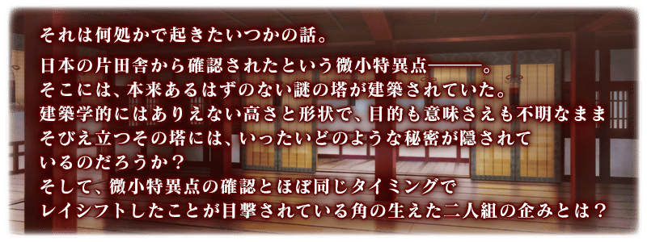
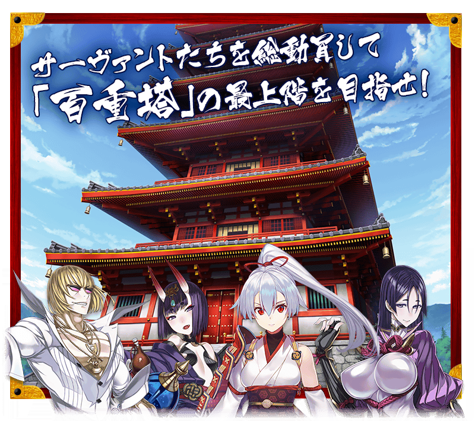
◆活動舉辦期間◆
2018年1月24日(三) 17:00～1月31日(三) 11:59
◆活動概要◆
舉辦期間限定・高難易度活動「節分酒宴繪巻 鬼樂百重塔」！
進行主要關卡，攻略由一百階層構成的「百重塔」入手踏破報酬吧！
本活動通過關卡每踏破十階「百重塔」就會出現Boss Servant。
討伐全部的Boss Servant，完全踏破「百重塔」吧！
◆活動參加條件◆
只限通過「終局特異點」的Master才能參加
※不需要通過亞種特異點(Ⅰ到Ⅳ)及第2部序幕「序」。
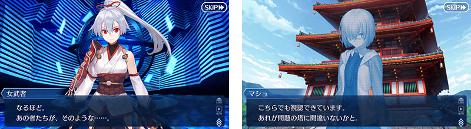
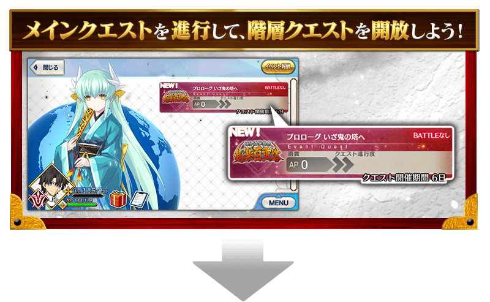
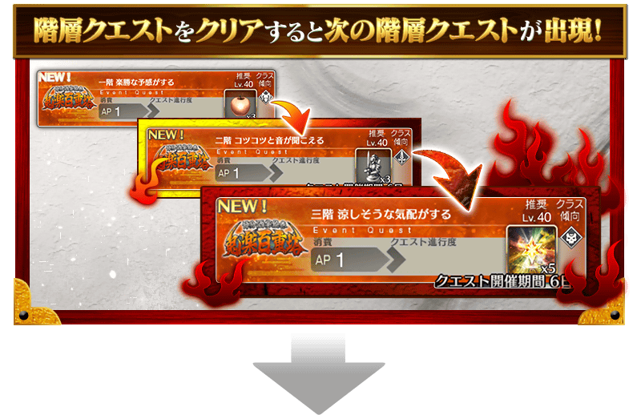
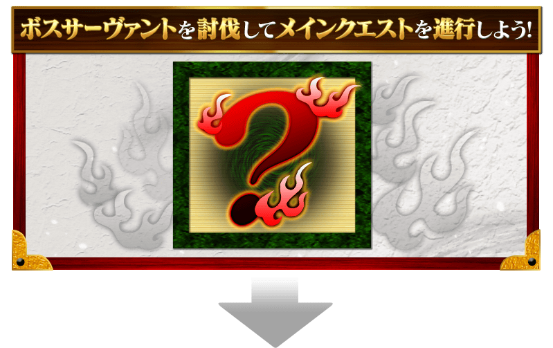
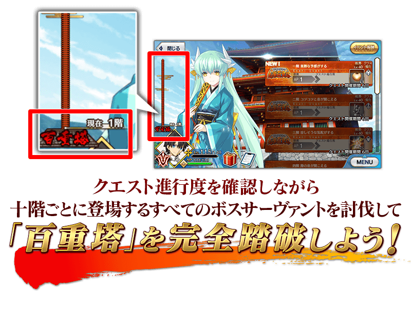
在「節分酒宴繪巻 鬼樂百重塔」與平常的隊伍編成有所差異，無法選擇支援Servant做為隊伍成員。
| 【平常的隊伍編成】 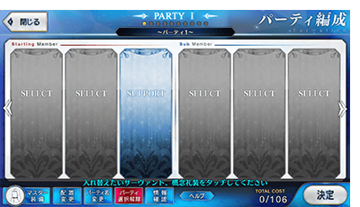 |
【無支援的隊伍編成】 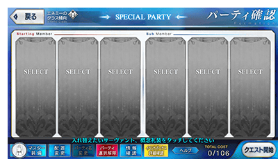 |
通過階層關卡的話，在關卡出撃的Servant會變成「疲勞」狀態而無法出撃。
「疲勞」狀態會藉由時間經過回復，等待回復時無法前進至下個階層。將未「疲勞」的Servant替換入編成，挑戰下個階層吧！
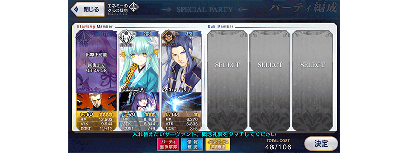
※只有戰鬥勝利時才會變成「疲勞」狀態，敗北或撤退的情況不會變成「疲勞」狀態。
※變成「疲勞」狀態的情況，與之同名同職階的Servant也會變成「疲勞」狀態。
持有數位同Servant的情況，未出撃的同Servant也不可出撃。
※請注意「疲勞」狀態的回復只能藉由時間經過，無法藉由道具和令咒等進行回復。
※適用「疲勞」狀態只有期間限定・高難易度活動「節分酒宴繪巻 鬼樂百重塔」內的關卡，平常的主線關卡和強化關卡等常駐關卡為對象外。
通過因主線關卡進行所開放的關卡「發現 療癒之秘湯(発見 癒やしの秘湯)」的話會開放「溫泉」。在「溫泉」Servant「疲勞」狀態的回復速度提升會有不可思議的效果，最多可讓5位Servant入浴。
讓中意的Servant入浴「溫泉」，更快變成可再出撃吧！
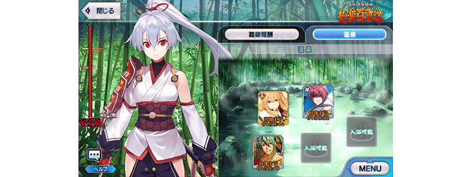
※請注意入浴中的Servant能任意替換，從「溫泉」起身的Servant不會反映回復速度提升的效果。
※請注意入浴中的Servant無法移動至靈基保管室。
【1月25日(四) 22:45追記】
「節分酒宴繪巻 鬼樂百重塔」中，在選擇Servant的「Servant選擇畫面」，「排序順序設定」的「智慧排序」功能ON的話，會將「疲勞」狀態列入考慮來排序，可優先顯示能出撃的Servant。
另外，在入浴「溫泉」時，「智慧排序」功能ON的話，可優先顯示「疲勞」狀態的Servant。
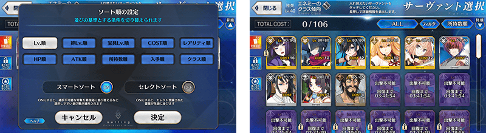
◆超值攻略方法◆ 裝備可藉踏破報酬入手的活動限定概念禮裝「鬼に衣」的話，會提升「節分酒宴繪巻 鬼樂百重塔」中自身的攻擊威力。
【活動限定概念禮裝】
| 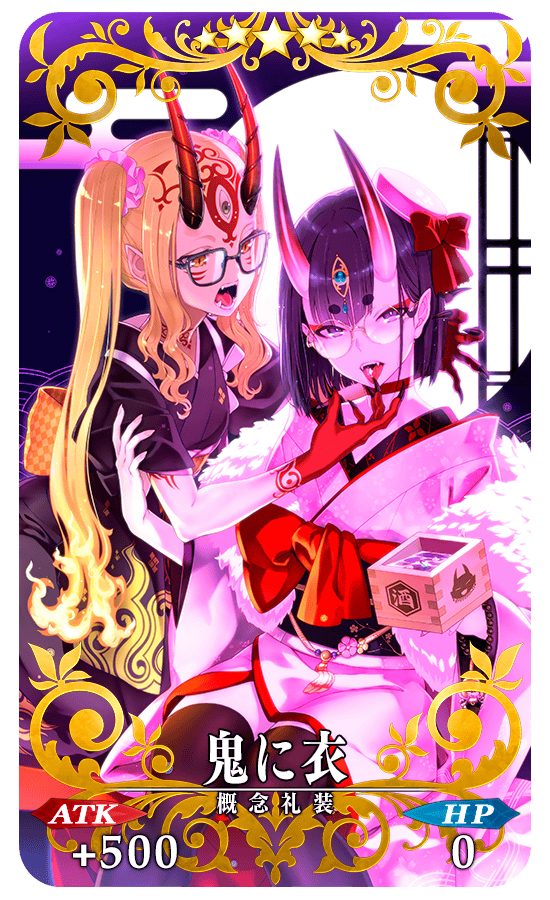 |
★★★★★SSR |
【攻略的注意點】
在「節分酒宴繪巻 鬼樂百重塔」沒有做為Servant對象的活動限定加成技能效果(Servant特效)。
因此，強化更多的Servant，替換「疲勞」狀態的Servant會是攻略「百重塔」的關鍵。
◆百重塔◆
| 階層 | 踏破報酬 | 個數 |
|---|---|---|
| 五階 | 世界樹之種 | 5 |
| 十階 | 原初的産毛 | 5 |
| 十五階 | 魔術髄液 | 5 |
| 二十階 | 混沌之爪 | 5 |
| 二十五階 | 呼符 | 1 |
| 三十階 | 活動限定概念禮裝★5(SSR)「鬼に衣」 | 1 |
| 三十五階 | 世界樹之種 | 5 |
| 四十階 | 原初的産毛 | 5 |
| 四十五階 | 魔術髄液 | 5 |
| 五十階 | 英靈結晶・流星之芙芙ALL★4(HP) | 1 |
| 五十五階 | 世界樹之種 | 5 |
| 六十階 | 活動限定概念禮裝★5(SSR)「鬼に衣」 | 1 |
| 六十五階 | 魔術髄液 | 5 |
| 七十階 | 奇奇神酒 | 5 |
| 七十五階 | 呼符 | 1 |
| 八十階 | 英靈結晶・日輪之芙芙ALL★4(ATK) | 1 |
| 八十五階 | 世界樹之種 | 5 |
| 九十階 | 英靈結晶・流星之芙芙ALL★4(HP) | 1 |
| 九十五階 | 魔術髄液 | 5 |
| 百階 | 活動限定概念禮裝★5(SSR)「鬼に衣」 | 1 |
| ？？？ | 枯淡勾玉 | 5 |
| ？？？ | 龍之逆鱗 | 5 |
| ？？？ | 鬼魂提燈 | 5 |
| ？？？ | 活動限定概念禮裝★5(SSR)「鬼に衣」 | 1 |
| ？？？ | 呼符 | 1 |
| ？？？ | 英靈結晶・日輪之芙芙ALL★4(ATK) | 1 |
| ？？？ | 枯淡勾玉 | 5 |
| ？？？ | 活動限定概念禮裝★5(SSR)「鬼に衣」 | 1 |
| ？？？ | 鬼魂提燈 | 5 |
| ？？？ | 傳承結晶 | 1 |
| ？？？ | 枯淡勾玉 | 5 |
| ？？？ | 英靈結晶・流星之芙芙ALL★4(HP) | 1 |
| ？？？ | 鬼魂提燈 | 5 |
| ？？？ | 英靈結晶・日輪之芙芙ALL★4(ATK) | 1 |
| ？？？ | 混沌之爪 | 5 |
| ？？？ | 英靈結晶・流星之芙芙ALL★4(HP) | 1 |
| ？？？ | 奇奇神酒 | 5 |
| ？？？ | 英靈結晶・日輪之芙芙ALL★4(ATK) | 1 |
| ？？？ | 龍之逆鱗 | 5 |
| ？？？ | 傳承結晶 | 1 |
※踏破報酬可在通過該階層的階層關卡時獲得。
以通過「百重塔」百階的階層關卡的Master為對象開放高難易度關卡「挑戰關卡」。
在通過挑戰關卡時可獲得豪華報酬。
挑戰關卡就算在通過後也不會消失，能無數次挑戦，可以變更Servant和概念禮裝的組合後再次挑戰。
在挑戰關卡中能使用好友的支援Servant，「疲勞」狀態的Servant也能出撃關卡。
另外，通過挑戰關卡也不會讓Servant變成「疲勞」狀態。
※關卡通過報酬、戰利品、Master經驗值、魔術禮裝經驗值、絆點數只限在初次通過時獲得。
◆挑戰關卡參加條件◆
只限通過「百重塔」百階的階層關卡的Master才能參加
◆挑戰關卡初次通過報酬◆
傳承結晶 1個
在迦勒底之門內以期間限定開放每日出現的關卡「種火集め」與「修練場」全種類。
◆舉辦期間◆
2018年1月22日(一) 18:00～1月31日(三) 11:59
◆對象關卡◆
【種火集め】
初級、中級、上級、超級
【修練場】
初級、中級、上級、超級
| 時間 | 種火集め | 修練場 |
|---|---|---|
| 1月22日(一) 17:00～ 1月31日(三) 11:59 |
・鬼楽百重塔開催記念 月曜 種火集め<槍・殺編> ・鬼楽百重塔開催記念 火曜 種火集め<剣・騎編> ・鬼楽百重塔開催記念 水曜 種火集め<弓・術編> ・鬼楽百重塔開催記念 木曜 種火集め<槍・殺編> ・鬼楽百重塔開催記念 金曜 種火集め<剣・騎編> ・鬼楽百重塔開催記念 土曜 種火集め<弓・術編> ・鬼楽百重塔開催記念 日曜 種火集め<ランダム編> |
・鬼楽百重塔開催記念 月曜 弓の修練場 ・鬼楽百重塔開催記念 火曜 槍の修練場 ・鬼楽百重塔開催記念 水曜 狂の修練場 ・鬼楽百重塔開催記念 木曜 騎の修練場 ・鬼楽百重塔開催記念 金曜 術の修練場 ・鬼楽百重塔開催記念 土曜 殺の修練場 ・鬼楽百重塔開催記念 日曜 剣の修練場 |
※關卡通過報酬的魔力稜鏡是只有初次通過時才可獲得。
※請注意以期間限定出現的「種火集め」及「修練場」跟平常每日出現的「種火集め」及「修練場」關卡有所差異，不會繼承「關卡情報」。
※舉辦期間中，關卡通過報酬不會重置。
【種火集め 關卡的難易度等】
| 難易度 | 推薦Lv | 消耗AP | 初次通過報酬 |
|---|---|---|---|
| 初級 | 5 | 10 | 魔力稜鏡 1個 |
| 中級 | 10 | 20 | 魔力稜鏡 2個 |
| 上級 | 25 | 30 | 魔力稜鏡 3個 |
| 超級 | 40 | 40 | 魔力稜鏡 4個 |
【修練場 關卡的難易度等】
| 難易度 | 推薦Lv | 消耗AP | 初次通過報酬 |
|---|---|---|---|
| 初級 | 10 | 10 | 魔力稜鏡 1個 |
| 中級 | 25 | 20 | 魔力稜鏡 2個 |
| 上級 | 40 | 30 | 魔力稜鏡 3個 |
| 超級 | 60 | 40 | 魔力稜鏡 4個 |
◆「節分酒宴繪巻 鬼樂百重塔Pick Up召喚(每日交替)」期間◆
期間:2018年1月24日(三) 17:00～2月7日(三) 11:59
舉辦期間限定「節分酒宴繪巻 鬼樂百重塔Pick Up召喚(每日交替)」！
「★5(SSR)酒吞童子」「★5(SSR)坂田金時(Berserker)」「★5(SSR)源頼光(Berserker)」以期間限定登場！
※未到達終局特異點的狀態也能進行「節分酒宴繪巻 鬼樂百重塔Pick Up召喚(每日交替)」。
上述3位Servant以每日交替Pick Up！
另外，「★4(SR)Archer・地獄」「★4(SR)茨木童子」常駐Pick Up。
※酒吞童子、坂田金時(Berserker)、源頼光(Berserker)在Pick Up期間結束後不會追加到故事召喚。
※Archer・地獄、茨木童子在Pick Up期間結束後也會在故事召喚被抽出。
※請注意在「節分酒宴繪巻 鬼樂百重塔」沒有做為Servant對象的活動限定加成技能效果(Servant特效)。
詳情請在聖晶石召喚畫面左下的召喚詳細確認。
※關於真名尚未判明的Servant，透過主線關卡的進行會讓Servant及一部份寶具的名稱變化。
Pick Up期間中，期間限定Servant、Pick Up Servant的出現機率提升！
10次召喚中確定1張★4(SR)以上和確定1位★3(R)以上的Servant！
※確定★4(SR)以上包含Servant和概念禮裝。
※所謂「出現機率提升」意指比同稀有度的Servant及概念禮裝出現機率更高的設定。
| 每日交替Pick Up期間 | 每日交替Pick Up內容 |
|---|---|
| 1月24日(三) 17:00～22:59 | 酒吞童子 坂田金時(Berserker) 源頼光(Berserker) |
| 1月24日(三) 23:00～1月25日(四) 22:59 | 酒吞童子 坂田金時(Berserker) |
| 1月25日(四) 23:00～1月26日(五) 22:59 | 酒吞童子 源頼光(Berserker) |
| 1月26日(五) 23:00～1月27日(六) 22:59 | 坂田金時(Berserker) 源頼光(Berserker) |
| 1月27日(六) 23:00～1月28日(日) 22:59 | 坂田金時(Berserker) |
| 1月28日(日) 23:00～1月29日(一) 22:59 | 酒吞童子 |
| 1月29日(一) 23:00～1月30日(二) 22:59 | 源頼光(Berserker) |
| 1月30日(二) 23:00～ 2月3日(六) 22:59 |
酒吞童子 坂田金時(Berserker) 源頼光(Berserker) |
| 2月3日(六) 23:00～2月4日(日) 22:59 | 坂田金時(Berserker) |
| 2月4日(日) 23:00～2月5日(一) 22:59 | 酒吞童子 |
| 2月5日(一) 23:00～2月6日(二) 22:59 | 源頼光(Berserker) |
| 2月6日(二) 23:00～2月7日(三) 11:59 | 酒吞童子 坂田金時(Berserker) 源頼光(Berserker) |
※請注意會以每日交替變更Pick Up的Servant。
介紹酒吞童子、源頼光(Berserker)的寶具演出！
在「Fate/Grand Order」官方網站內的公告中，公開了「★5(SSR)酒吞童子」「★5(SSR)源頼光(Berserker)」的寶具演出。敬請確認。
坂田金時(Berserker)的戰鬥動作及寶具演出翻新！
◆翻新時間◆
2018年1月24日(三) 17:00～
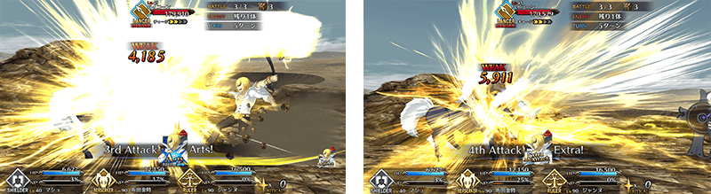
介紹翻新後坂田金時(Berserker)的寶具演出！
在「Fate/Grand Order」官方網站內的公告中，公開了「★5(SSR)坂田金時(Berserker)」的寶具演出。敬請確認。
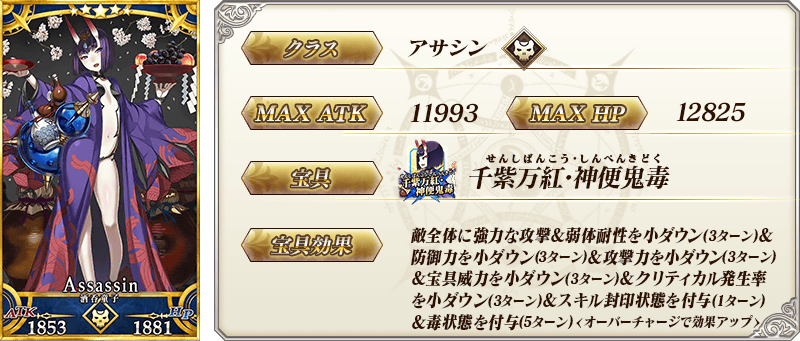
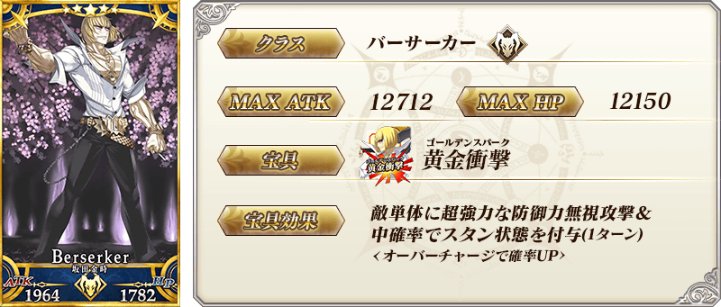
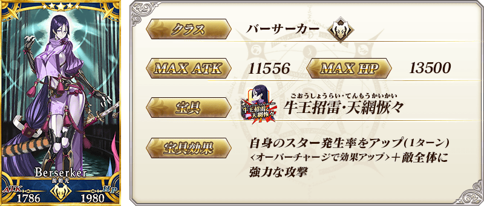
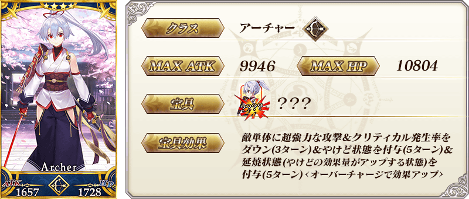
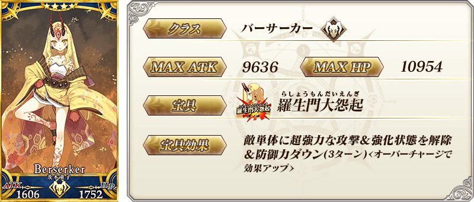
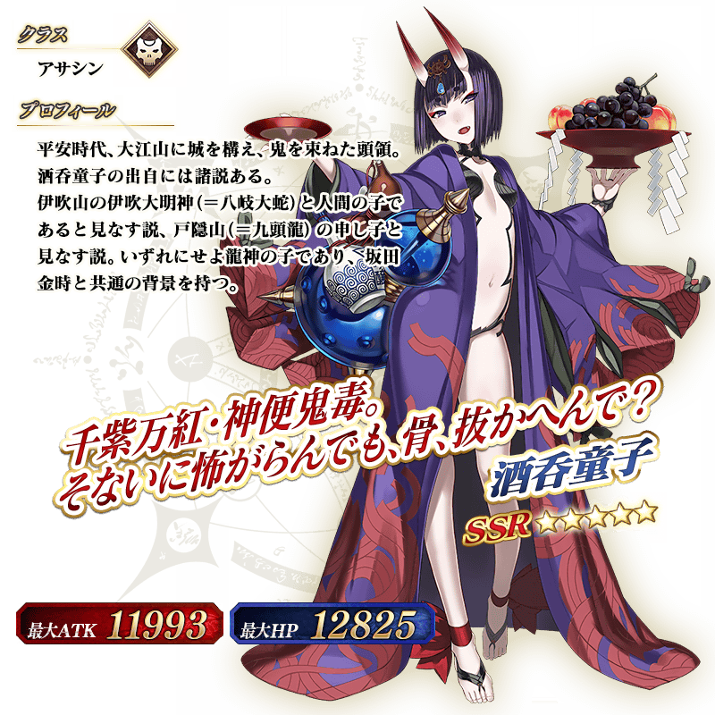

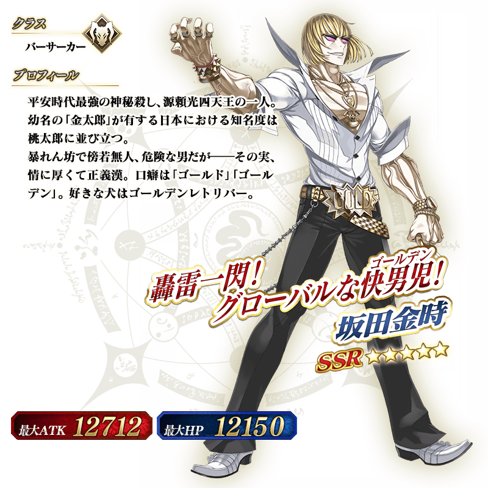
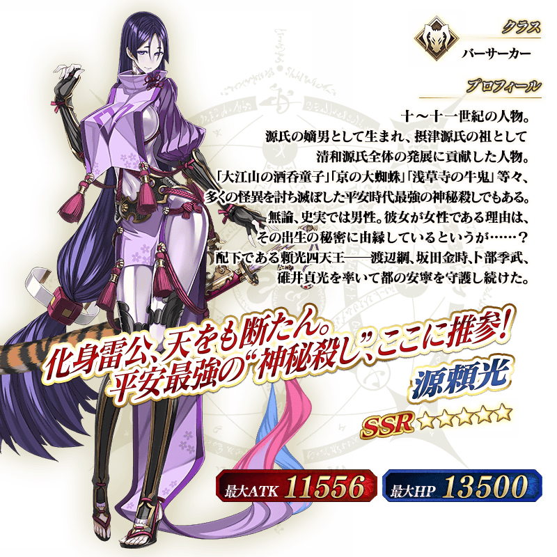